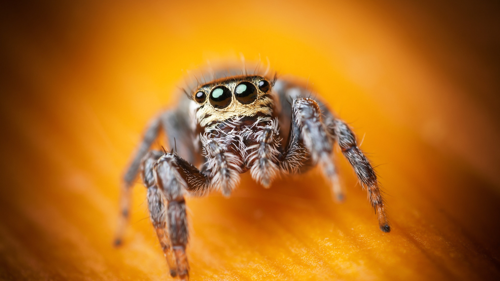
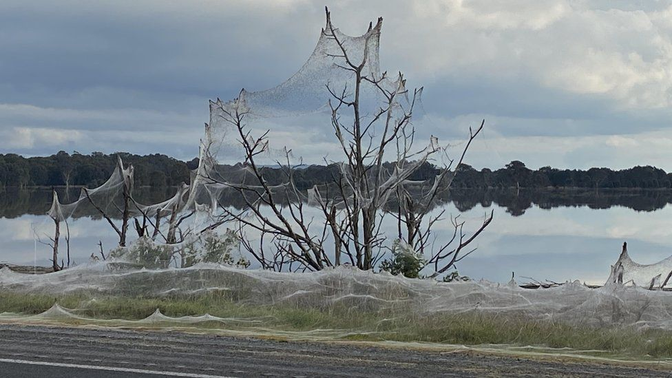
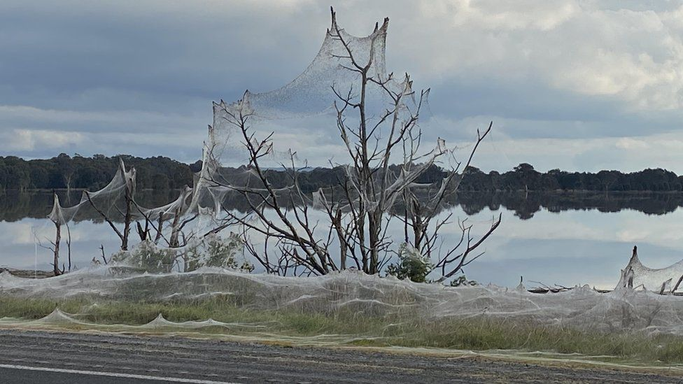
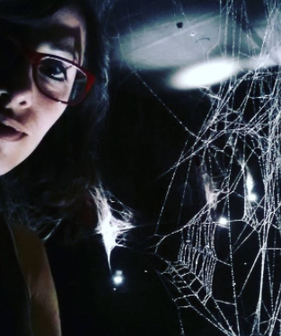

"A real super power based only on proteins and water"
From "Marvelous Dwellers" Series
In a culture where the entertainment industry is creating new characters and new fictional worlds every day, choosing a favourite superhero is a harsh decision to make. Not for me though.
I really fancy spiderman in all his versions, even the stupid-teenager-one. I haven’t been able to sort out exactly the reasons why I love him, but I always did and I always will . Having said that, we can’t argue that spiderman is second-to-none.
He’s the most realistic super-hero, the less fanciful, and I will explain you why...
I really fancy spiderman in all his versions, even the stupid-teenager-one. I haven’t been able to sort out exactly the reasons why I love him, but I always did and I always will . Having said that, we can’t argue that spiderman is second-to-none.
He’s the most realistic super-hero, the less fanciful, and I will explain you why...
 Composed exclusively by proteins that confer strength, and water that provoke superficial tension and -hence- elasticity, the spider-web has absolutely astonishing powers.
Composed exclusively by proteins that confer strength, and water that provoke superficial tension and -hence- elasticity, the spider-web has absolutely astonishing powers.
According estimations made by scientists in the last couple of years, based on the resistance of the silk, the strongest spider-web could resist hurricane winds, stopping a running truck or even a Boeing 747 to a halt. What a hell, spiders!!!!? Yes, I totally understand that we should take this with a pinch of salt because it were simulations instead of real live test but still...

Also, they can “fly” thanks to one single strand of spider-web: they can release a yarn to the sky and let the wind to make its job. It has been proved that some spiders can reach the 4 thousand meters of altitude doing this. Impressed?
The studies done about spider-webs challenge the smartest engineer’s mind: when one yarn of silk is affected, it changes its molecular structure to elongate itself and then absorb the strength. In this way, that individual yarn breaks, but without compromising the web. That phenomenon is called “the sacrificed yarn” and overcomes any principle of building made by humans. To be blunt: a car, a plane, or a building exposed to the same tension would utterly collapse. Do you still rather Thor?
Plus this, the material is extremely light and thin, turning it more interesting for manufacturing, for example, mountain tends, parachutes, bulletproof vest, among others things.
The studies done about spider-webs challenge the smartest engineer’s mind: when one yarn of silk is affected, it changes its molecular structure to elongate itself and then absorb the strength. In this way, that individual yarn breaks, but without compromising the web. That phenomenon is called “the sacrificed yarn” and overcomes any principle of building made by humans. To be blunt: a car, a plane, or a building exposed to the same tension would utterly collapse. Do you still rather Thor?
Plus this, the material is extremely light and thin, turning it more interesting for manufacturing, for example, mountain tends, parachutes, bulletproof vest, among others things.
Why, then, if the spider-web is so powerful, isn’t taken more advantage from?
Well, this is because spider-web formation is a poblational job that involves many individuals. And they have trouble to put up with each other, so it’s usual to be eaten by a co-worker. Consequently, the biggest spider-web formally reported was 1.2 m. of width and 3.7m of length, made by lxeuticus socialis in Australia, although I think that record has been overcame recently. You can check it by yourself!

This event happened on June 15th in Australia. After days of heavy rain, the citizens woke up to discover that a huge spider-web covered more than a kilometre along a road. And while the web appeared as one single sheet, if that was true is still for unravelling. Anyway, the scene was something to see! Right?

This event happened on June 15th in Australia. After days of heavy rain, the citizens woke up to discover that a huge spider-web covered more than a kilometre along a road. And while the web appeared as one single sheet, if that was true is still for unravelling. Anyway, the scene was something to see! Right?


Despite the difficulties to keep them in captivity, an Argentinian artist has gone down that road to make his envision real and create a labyrinth of spider-web, with the cooperation, of course, of 7000 spiders locked in a room for six months. And while I was very lucky to enjoy his (well, their!) work, I shall acknowledge that it sounds impossible to make a useful product from the daily life of this arachnid. But, who knows? Maybe it's a matter of determination and patience.
Let me show you some pictures of the exposition “How to catch the universe in a spider-web” by Tomás Saraceno.
 Finally, after this path we walked together, sharing information… Did I convince you that spiderman is the best superhero? Doesn’t he have the most approachable super power indeed? Couldn’t he do great things for humanity?
Finally, after this path we walked together, sharing information… Did I convince you that spiderman is the best superhero? Doesn’t he have the most approachable super power indeed? Couldn’t he do great things for humanity?
I definitely think so.
And given the advances in genome editing, it is not so far-fetched to think that in the future humans will be able to develop the technique to incorporate genes to weave spider-webs ourselves. I leave the ethical discussion for another day. Now, let me dream of being a spider-woman and climb every single building without rope...
The end…
Thank you for reading me!!
I really wish that you have relished my work. I not only wrote the text but also coded the webpage and its design. The challenge is big, but I'm an enthusiastic learner.
Please give me your I LIKE and SHARE the publication to expand the community of MARVELOUS DWELLERS! If you access through a computer, remember you can leave your comments at the end of the page. Or you can send me an e-mail, if you want!. Either way you choose, I would appreciate a lot your support!.
If you liked the topic, I invite you to read the bonus content below.
The world of spiders is amazing. The more I dive in, the more surprised I am. They seem to have incredibles skills, real super powers for us.
Argyroneta aquatica is a spider that can live completely submerged in water. It builds a chamber with silk and fills it with air. The chamber is transported under the spider's belly and the oxygen is extracted to request.
Some spiders are master jumpers, for instance Portia, that can leap up to 50 times her own body length. Also it's capable of portraying the space in three dimensions, which make it a great strategist while chasing its prey.
But from my point of view, they are upstaged by Euophrys omnisuperstes, who not only has this skill of jumping but also is able to live at very low temperatures and low pressure of Oxygen. It has been found under rocks at least 6.700 metres of altitude, in -nothing more, nothing less- that the Mount Everest, and that is why they are known as "the jumping spider of Himalaya".
How is it possible that spiders haven't taken the world?
Without further to do, I say goodbye for now! Until the next post!
Main sources:
Worldwide database of jumping spiders
Portia (spider)
Entomology at the University of Kentucky
Wanless, F. R. (1975). Spiders of the family Salticidae from the upper slopes of Everest and Makalu. Bulletin of the British Arachnological Society 3(5): 132-136
Argyroneta aquatica is a spider that can live completely submerged in water. It builds a chamber with silk and fills it with air. The chamber is transported under the spider's belly and the oxygen is extracted to request.
Some spiders are master jumpers, for instance Portia, that can leap up to 50 times her own body length. Also it's capable of portraying the space in three dimensions, which make it a great strategist while chasing its prey.
But from my point of view, they are upstaged by Euophrys omnisuperstes, who not only has this skill of jumping but also is able to live at very low temperatures and low pressure of Oxygen. It has been found under rocks at least 6.700 metres of altitude, in -nothing more, nothing less- that the Mount Everest, and that is why they are known as "the jumping spider of Himalaya".
How is it possible that spiders haven't taken the world?
Without further to do, I say goodbye for now! Until the next post!
Main sources:
Worldwide database of jumping spiders
Portia (spider)
Entomology at the University of Kentucky
Wanless, F. R. (1975). Spiders of the family Salticidae from the upper slopes of Everest and Makalu. Bulletin of the British Arachnological Society 3(5): 132-136